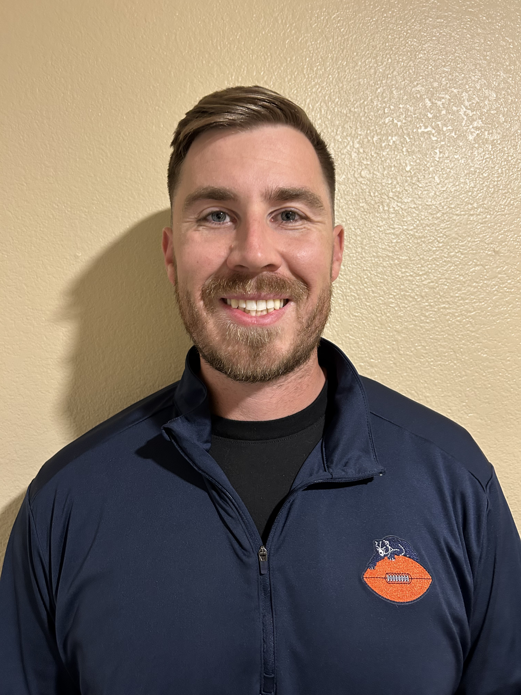
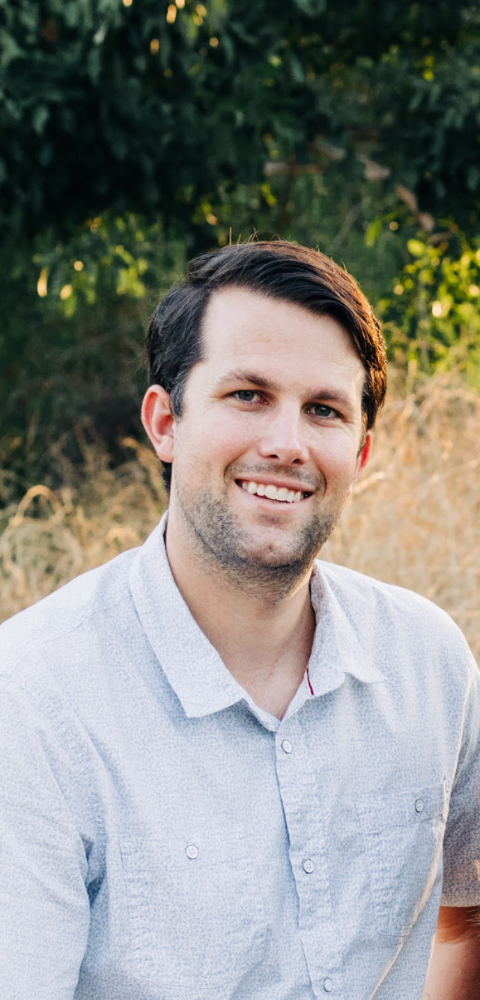
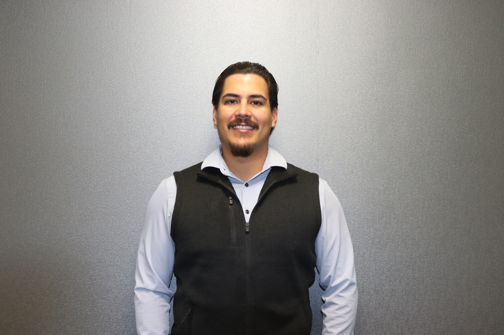

Zero Dark Birdie creates golf-centered wellness retreats that help Veterans reconnect, rediscover purpose, and find pathways toward continued support.
Support the Mission
Zero Dark Birdie is dedicated to restoring hope, purpose,
and resilience in military veterans facing PTSD and other
mental health challenges. Through immersive golf-centered
wellness retreats, we provide a supportive environment
where veterans can decompress, reconnect, and rediscover
their identity beyond service.
We guide veterans toward trusted, vetted treatment providers
and personalized care pathways that support long-term healing.
By fostering community, movement, and access to life-changing
resources, our mission is to reduce isolation, combat veteran
suicide, and create a scalable model for sustainable mental
health recovery nationwide.
Zero Dark Birdie exists to support veterans facing mental
health challenges by creating transformative golf-centered
retreats where connection, camaraderie, and access to
meaningful resources come together.
We believe no veteran should have to navigate the challenges
of life after service alone. Our retreats create a safe
environment where veterans can step away from the pressures
of everyday life, reconnect with their fellow veterans,
build genuine relationships, and rediscover purpose.
Through golf, peer camaraderie, wellness experiences,
education, and connections to trusted mental health and
wellness resources, we help veterans identify pathways
toward continued support and healing.
This isn't just about golf. It's about creating a community
where veterans know they belong, have access to resources,
and are reminded that their story doesn't end when their
service does.
Zero Dark Birdie — Net Zero Suicide.
Total Transformation.
Too many Veterans are struggling in silence. In 2023,
6,398 U.S. Veterans died by suicide—an average of 17.5
lives lost every day. Even more concerning, 61% of Veterans
who died by suicide were not receiving VA health care in
the year before their deaths.
The challenge extends beyond access to clinical care.
Veterans can face PTSD, TBI, anxiety, depression, moral
injury, isolation, and the difficult transition from
military service to civilian life. For some, asking for
help can feel harder than facing the mission itself.
Zero Dark Birdie believes the solution starts with connection.
Our golf-centered wellness retreats create a place where
Veterans can step away, reconnect with their brothers and
sisters in service, build genuine camaraderie, and discover
trusted mental health and wellness resources.
We aren't replacing therapy. We're creating a bridge to it.
One Veteran. One connection. One retreat at a time.
Net Zero Suicide. Total Transformation.
Creating a community where Veterans can reconnect, rediscover purpose, and find a path toward continued support.
Serving communities in need with golf-based mentorship, scholarships, and support for military families.

Founder

Co-Founder

Mental Health Director

Board Member

Board Member